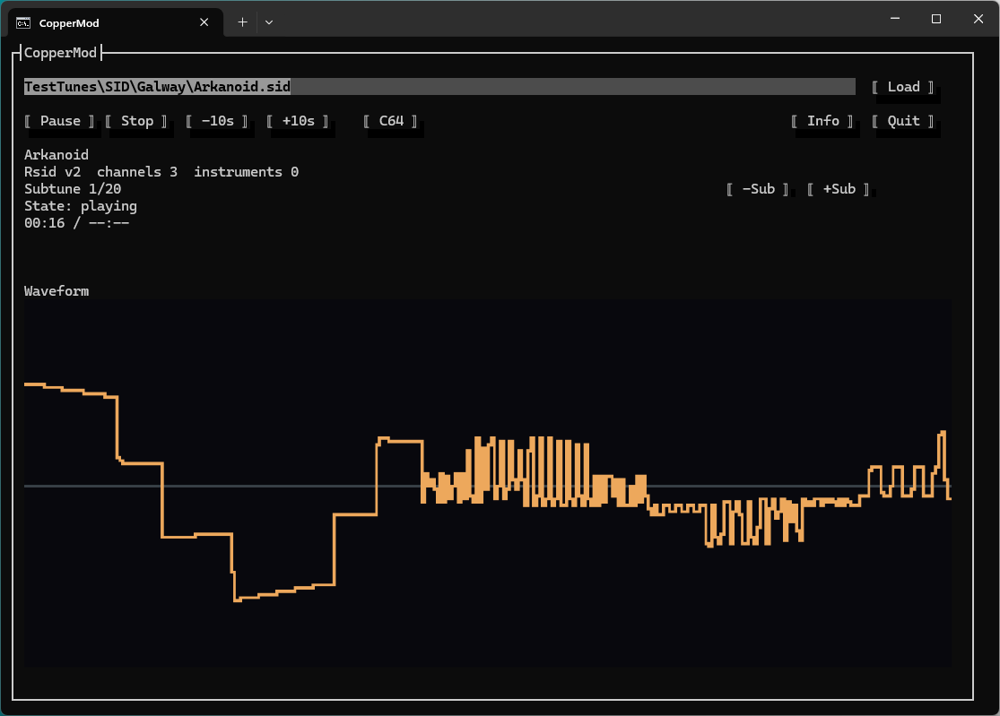

Windows x64
Self-contained package with the .NET runtime included.
Download Windows ZIPOpen-source music player
A terminal player for tracker and chip music, with reusable C# playback libraries and command-line audio export.

Playback backends for Amiga tracker modules, custom players and C64 music.
Replay accuracy is a work in progress. Current development features may differ from the published release; check its release notes. Music and third-party replay binaries are not included.
Published player release: 1.0.0.
These downloads are the released player, not a build of the current development branch.
Self-contained package with the .NET runtime included.
Download Windows ZIPRequires .NET 10. Audio output depends on the host platform.
Download .NET ZIPRender a module to an audio file without opening the terminal player.
dotnet run --project CopperMod.Tools -- render "tune.mod" --out tune.wav --seconds 30WAV uses 32-bit float samples. Raw PCM and MP3 output are also available; MP3 export uses Windows Media Foundation.
The player uses .NET 10, Terminal.Gui and NAudio.
dotnet build CopperMod/CopperMod.csproj -c Release
dotnet run --project CopperMod -c Release -- "path/to/tune.sid"The current development branch has a known Cust backend constructor mismatch that blocks the player build. See the repository README for its status; the downloads above are separate published artifacts.
Use the backends independently in other .NET applications. Each renders audio in small slices through shared module-loading and rendering interfaces.